Actividades
Cicletadas, talleres y salidas a la calle · 2011—2019Antes que un movimiento de incidencia política, Pedalea X la Calle fue —y es— un grupo de personas que sale a la calle. Desde 2011 organizamos cicletadas, bicipaseos, talleres y actividades para promover el uso cotidiano de la bicicleta y una mejor convivencia vial.
Muchas de esas actividades fueron nuestras; otras las hicimos junto a organizaciones amigas —Vive la Bici, HappyCiclistas, el Movimiento Furiosos Ciclistas, la Liga Chilena contra la Epilepsia, municipios y colectivos vecinales— y también nos sumamos a las grandes movilizaciones ciudadanas de esos años. Creíamos entonces, y lo seguimos creyendo, que la ciudad se cambia colaborando. Esta es la memoria de esas salidas, año a año.
Nacen las cicletadas de Ñuñoa
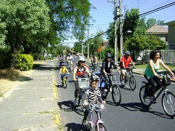
Las primeras cicletadas urbanas
La primera cicletada fue el domingo 28 de agosto de 2011: cerca de 140 personas se reunieron en Plaza Ñuñoa para pedalear juntas, apoyadas por los HappyCiclistas y el Movimiento Furiosos Ciclistas. La convocatoria se volvió mensual —el último domingo de cada mes— y así nació nuestra actividad más constante. En octubre, la tercera cicletada reunió a cerca de 60 personas.
Ver galería de la 2ª cicletada en FacebookCicletada de Navidad
Cerramos el año con una cicletada navideña: el domingo 25 de diciembre, a las 11:30 en Plaza Ñuñoa, invitamos a niñas, niños y a todo público —de edad y de espíritu— a sacar la bici empolvada o a estrenar el regalo pedalero del Viejito Pascuero.
Un año en la calle
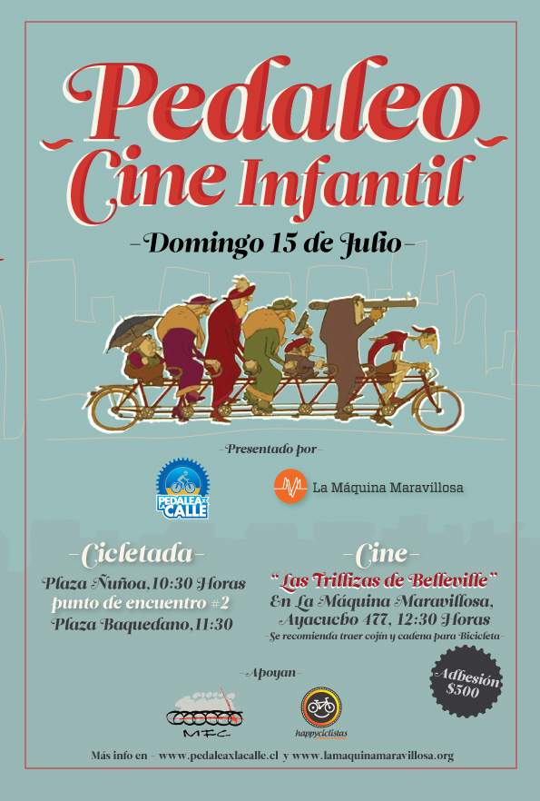
Pedaleo + Cine Infantil
Aprovechando las vacaciones de invierno, invitamos a las familias a pedalear y a cerrar la jornada con una película: Las trillizas de Belleville. La cita fue el domingo 15 de julio en Plaza Ñuñoa, a las 10:30.
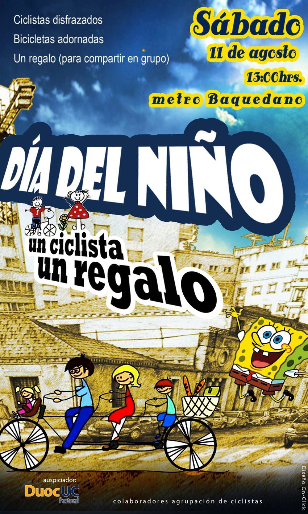
“Un ciclista, un regalo”: Día del Niño en el SENAME
El 11 de agosto celebramos el Día del Niño de una forma muy especial: una ruta en la que pedimos a las y los participantes asistir disfrazados —de superhéroes y dibujos animados— y cooperar con un regalo para niñas y niños del SENAME.
Bicipaseos Patrimoniales
Nos sumamos a Bicipaseos Patrimoniales para recorrer la historia y el patrimonio de la ciudad sobre dos ruedas. En agosto acompañamos el 8° Bicipaseo por Ñuñoa, atravesando los recovecos de esa comuna de casas y calles con memoria.
Ver galería del 7° Bicipaseo “La Cañada” en Facebook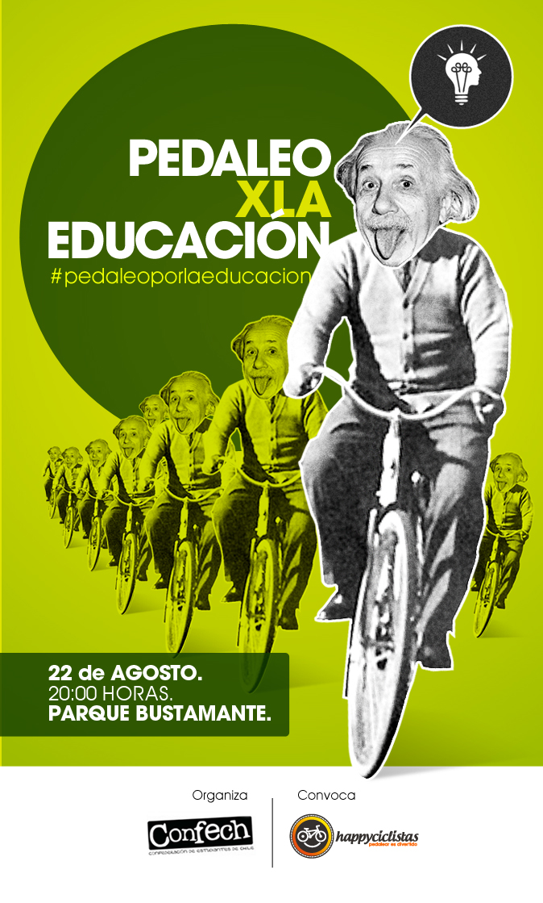
#PedaleoXlaEducación
En pleno movimiento estudiantil, la Confech y los HappyCiclistas convocaron a la cicletada #PedaleoXlaEducación, el miércoles 22 de agosto a las 20:00 desde el Parque Bustamante. Pedaleamos por una educación pública y por un planeta mejor —no se suspendía ni con lluvia.
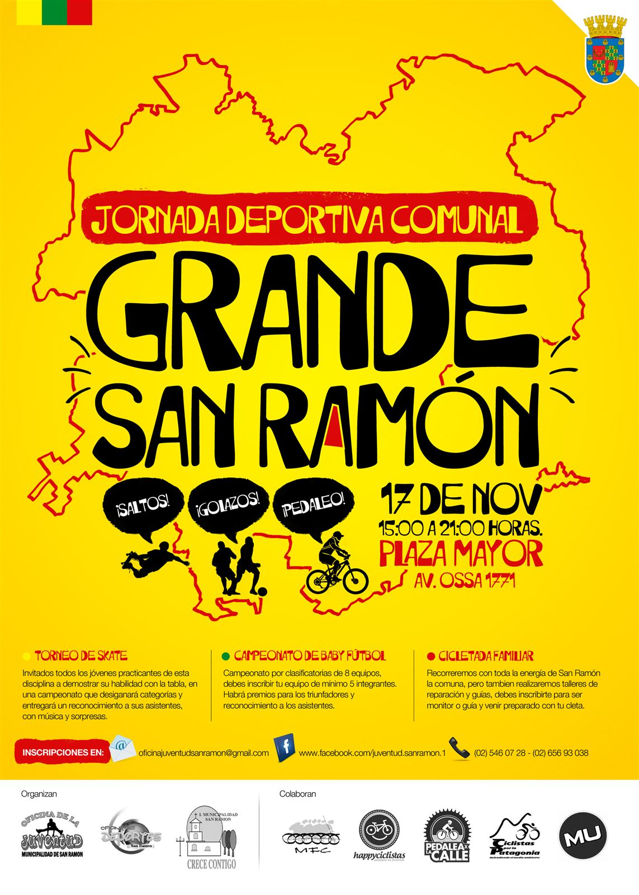
Grande San Ramón: cicletada y jornada deportiva
Acompañamos la Jornada Deportiva Grande San Ramón, una actividad para el encuentro de jóvenes y de distintos grupos de la comuna, con varias disciplinas y una cicletada como parte del programa.
Las cicletadas de Ñuñoa, mes a mes
Mientras tanto, la cicletada urbana de Ñuñoa siguió su curso: nos juntábamos el último domingo de cada mes en Plaza Ñuñoa. En agosto celebramos la 13ª edición, y para fin de año ya íbamos por la 16ª.
Ver galería de la 16ª Cicletada Urbana Ñuñoa en FacebookLa tradición continúa
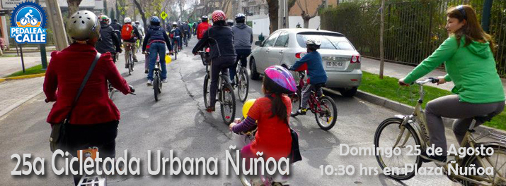
25ª Cicletada Urbana Ñuñoa
El domingo 25 de agosto de 2013 llegamos a la edición número 25 de la cicletada mensual. Dos años después de la primera, seguíamos siendo un grupo de vecinas y vecinos que usa la bicicleta como medio de transporte y sale a demostrarlo a la calle.
Ver galería de la 18ª Cicletada Urbana Ñuñoa en FacebookDel pedaleo a la ley
En estos años, el colectivo concentró su energía en la incidencia: las propuestas de modificación a la Ley de Tránsito, la Medición de Eficiencia de Modos de Transporte (MEMT) y el debate sobre movilidad y ciclovías. Las cicletadas propias se hicieron menos frecuentes, pero el trabajo no se detuvo —solo cambió de terreno. Esa etapa se cuenta en detalle en Reducción de velocidad.
De vuelta a la calle
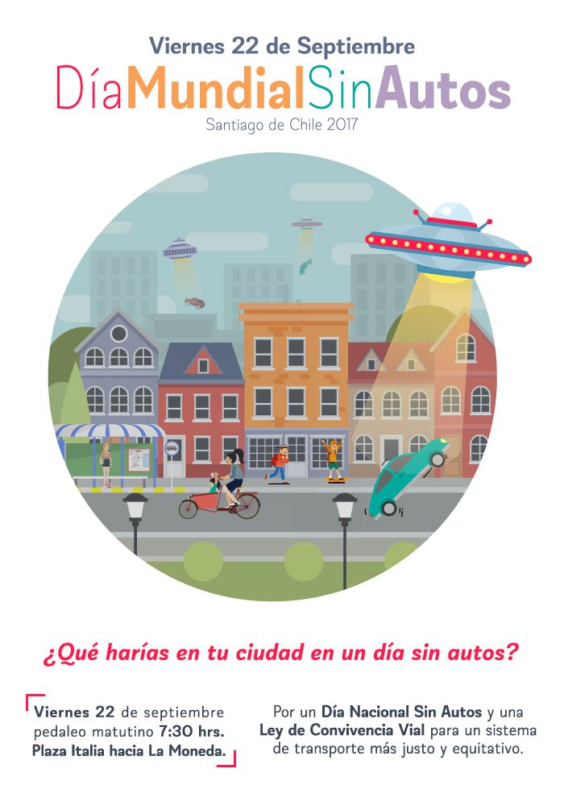
Día Mundial Sin Autos
El 22 de septiembre se celebra el Día Mundial Sin Autos, una iniciativa que desde los años 90 se replica en más de 1.500 ciudades del mundo. En Chile llevábamos más de una década organizando acciones para recordar que la ciudad puede moverse de otra manera.
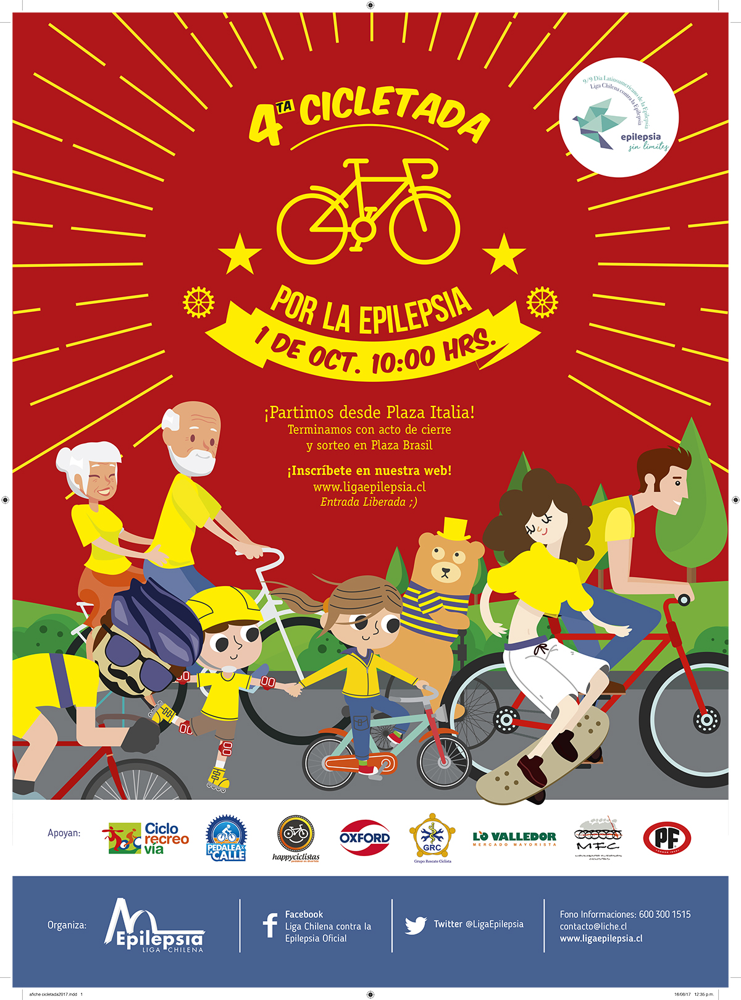
4ª Cicletada por la Epilepsia
El domingo 1 de octubre acompañamos la cuarta Cicletada por la Epilepsia, impulsada por la Liga Chilena contra la Epilepsia, para dejar de manifiesto que las personas con esta condición crónica pueden llevar una vida plena y activa.
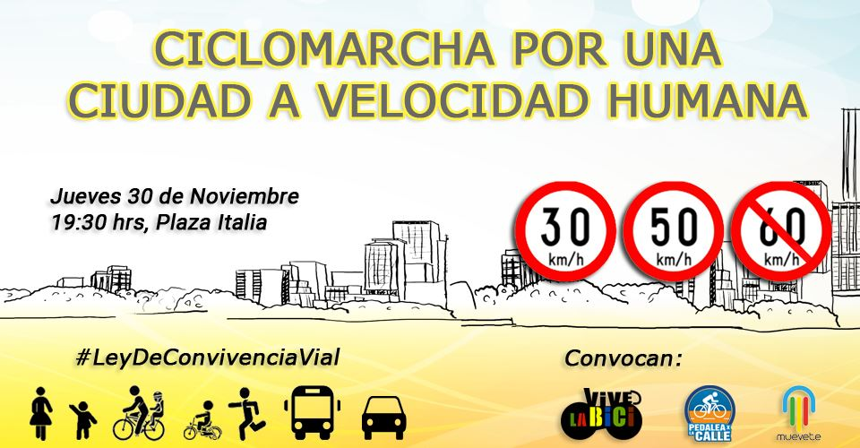
Ciclomarcha por una ciudad a velocidad humana
Tras el rechazo del Senado a la reducción de velocidad, convocamos a una ciclomarcha desde Plaza Italia, el jueves 30 de noviembre a las 19:30. Fue una de las primeras respuestas callejeras de una pelea que se cuenta completa en Reducción de velocidad.
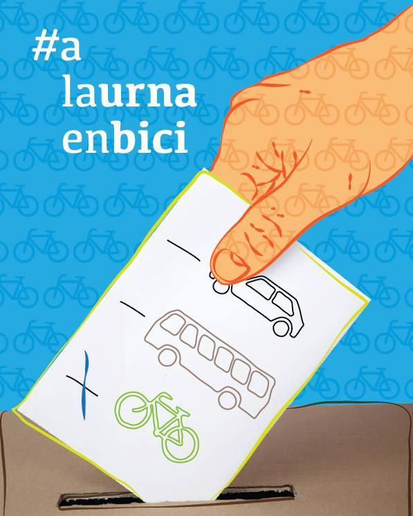
#aLaUrnaEnBici
Para la segunda vuelta presidencial del domingo 17 de diciembre, retomamos la campaña #aLaUrnaEnBici: una invitación a ir a votar pedaleando, evitando el taco y los cortes de calle. Ejercer la ciudadanía también sobre dos ruedas.
El año más intenso
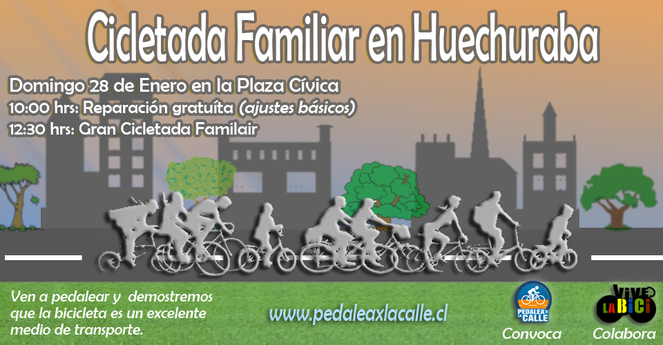
Cicletada Familiar en Huechuraba
Abrimos el año con una cicletada familiar en Huechuraba. Finalmente la reprogramamos, porque el colectivo estaba enfocado en su participación en el Foro Mundial de la Bicicleta, que ese año se realizaría en Lima.
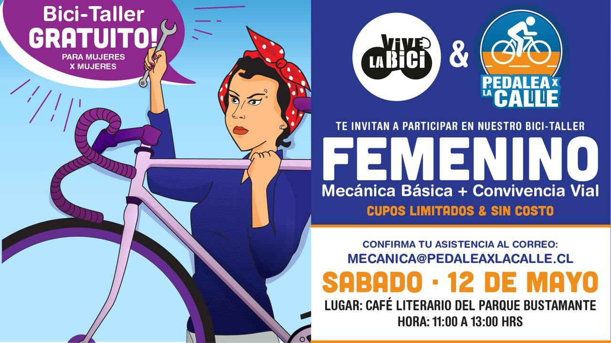
Bici-talleres para mujeres: mecánica básica y convivencia vial
Junto a la Asociación Vive la Bici realizamos dos bici-talleres gratuitos de mecánica básica, de mujeres para mujeres. El primero fue el sábado 12 de mayo y, ante la buena acogida, repetimos el sábado 26. La idea era simple y potente: que aprender a reparar la propia bicicleta también es una forma de autonomía.
Galería del 1er Bici-taller en Facebook
Galería del 2do Bici-taller en Facebook
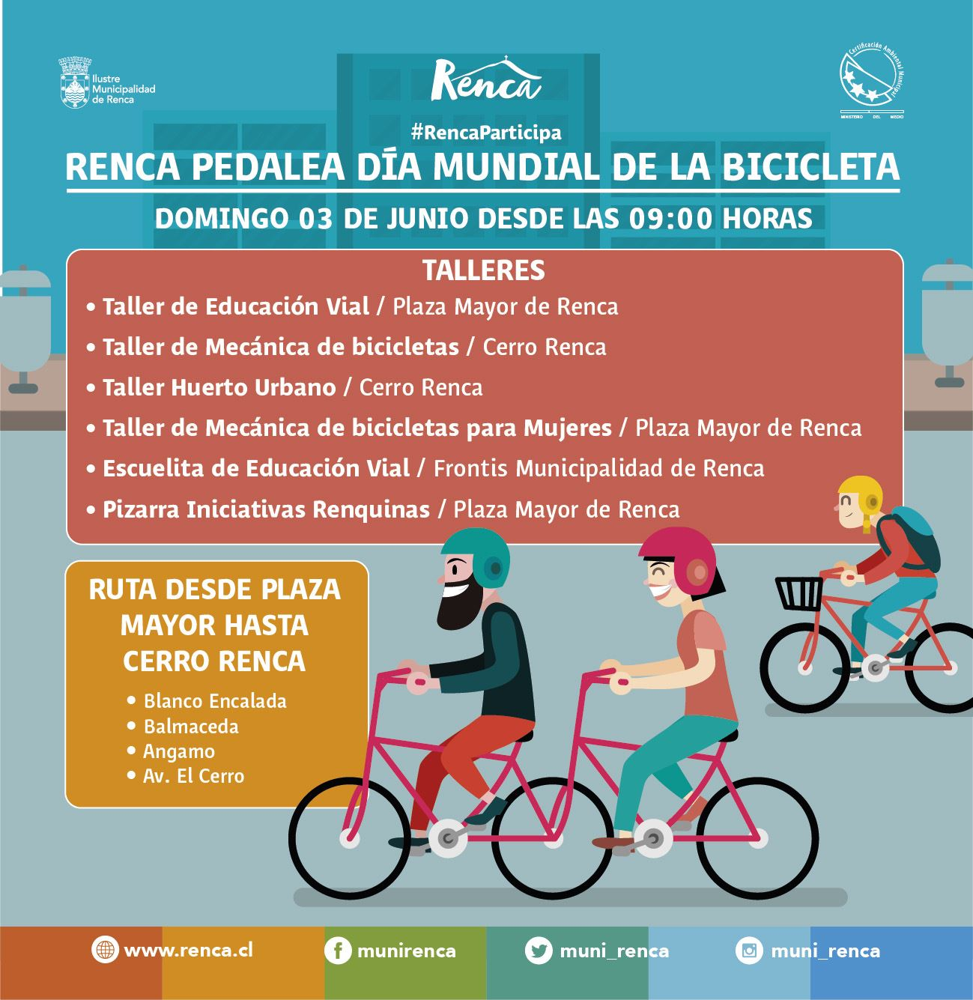
Día Mundial de la Bicicleta en Renca
El Día Mundial de la Bicicleta, declarado por la ONU, lo celebramos el domingo 3 de junio en Renca, invitados por la Municipalidad, con actividades gratuitas para toda la comunidad desde la mañana en la Plaza de Renca.

#60MATA: la cicletada se hace protesta
La tradicional “Cicletada del Primer Martes” se transformó en una manifestación por la vida: miles de personas pedalearon por Santiago exigiendo bajar la velocidad máxima. Fue una de las acciones más masivas de la Red Nacional por la Convivencia Vial. La historia completa está en Reducción de velocidad.
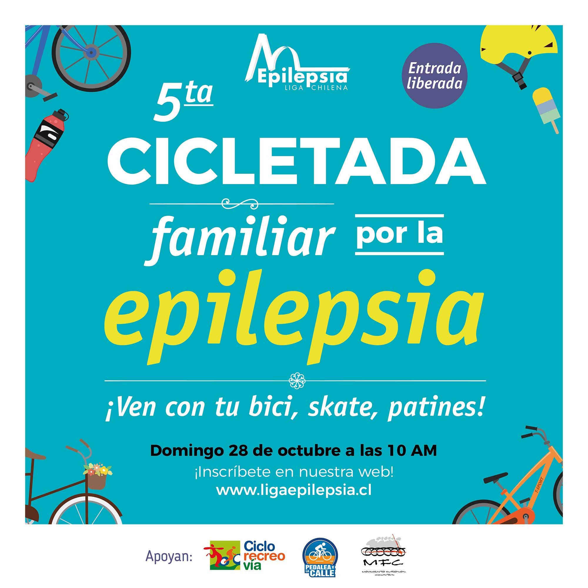
5ª Cicletada por la Epilepsia
Volvimos a acompañar a la Liga Chilena contra la Epilepsia en su quinta cicletada familiar. El llamado era amplio: en bici, en patines, en skate, corriendo o caminando —lo importante era estar.
Foro Convivencia Vial
Con la reducción de velocidad ya aprobada, organizamos junto a Vive la Bici y la Universidad de Chile un foro para analizar en detalle las modificaciones a la ley. Tiene su propia página en el archivo: Foro Convivencia Vial.
Volvemos… y el estallido
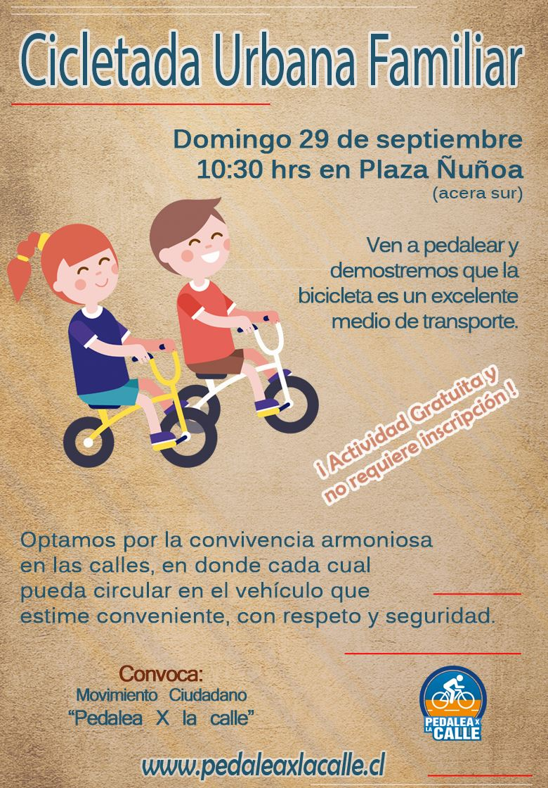
Cicletada Urbana Familiar en Ñuñoa: “¡Volvemos!”
Retomamos nuestra tradicional cicletada de Ñuñoa el viernes 27 de septiembre, para conmemorar el Día Nacional Sin Autos. Un regreso a las raíces del colectivo, ocho años después de la primera.
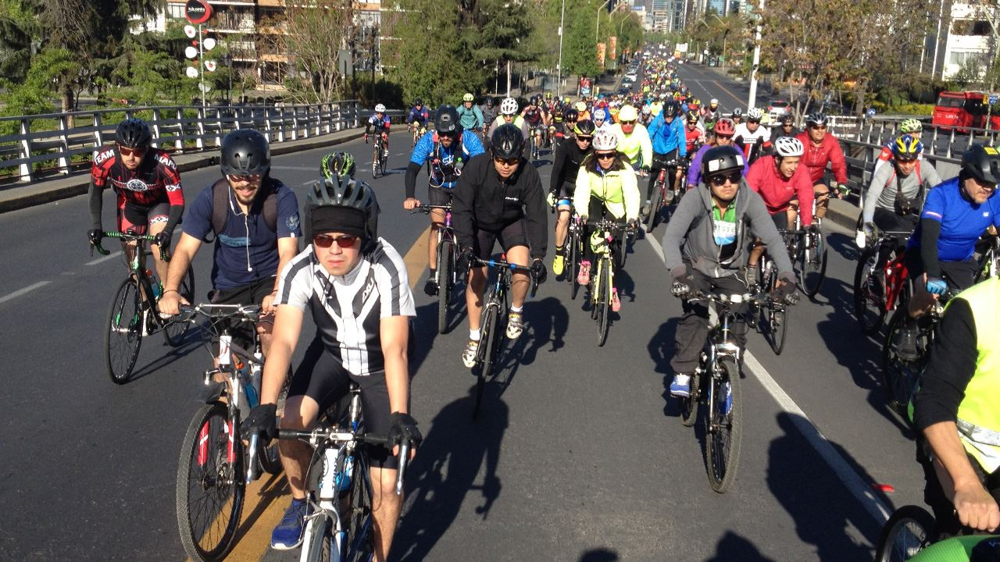
Ciclistas por Farellones
Apoyamos al colectivo Ciclistas por Farellones en su exigencia de seguridad para quienes suben a la cordillera. La segunda Cicletada por Farellones reunió a más de 1.000 personas pedaleando desde Plaza Italia hasta Corral Quemado, presionando al Ministerio de Transportes por una mesa de trabajo por la Ruta G-21.
Más allá de la bicicleta: apoyo a otras causas
Entendimos siempre la movilidad como parte de una construcción colectiva de una sociedad más justa. Por eso, cuando la calle se llenaba por otras razones, también estuvimos ahí —pedaleando, difundiendo y sumando fuerzas.
Apoyamos y acompañamos las movilizaciones por la diversidad y las disidencias sexo-genéricas —entre ellas la Marcha por el Orgullo—, el movimiento No+AFP, las movilizaciones del 8 de Marzo, la demanda por un aborto legal, seguro y gratuito, y las movilizaciones por una educación pública de calidad. Distintas causas que compartían un mismo principio: la participación, la justicia social y el derecho a la ciudad.
Actividades reconstruidas a partir de las publicaciones y galerías de Pedalea X la Calle (2011–2019). Los flyers son los afiches originales de cada convocatoria; las galerías completas se conservan en Facebook.